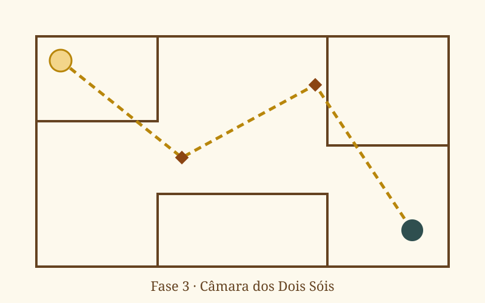
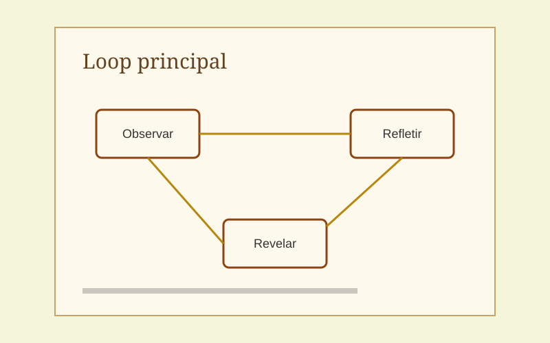

Projetos · Case study
Areias de Rá
Um puzzle sobre guiar a luz do sol por uma tumba esquecida, criado em 72 horas para uma game jam com o tema "Reflexo".

Visão geral
O jogador controla espelhos de bronze para levar um raio de sol até o selo de cada câmara. Cada fase adiciona um elemento novo: prismas que dividem a luz, areia que bloqueia caminhos e relógios de sol que mudam o ângulo do raio.
1. Conceber
Puzzles de reflexão costumam ser difíceis de ler: o jogador não sabe se errou o ângulo ou a ideia. O objetivo de design era que cada fase fosse compreendida em menos de 10 segundos e resolvida em menos de 3 minutos.
Restrições: 72 horas, equipe de 3 pessoas e um jogo que rodasse no navegador.
2. Desenvolver
- Protótipo de papel com régua e espelhos de bolso para validar o loop observar → refletir → revelar.
- Grade de 45°: restringi os ângulos para reduzir a tentativa e erro e deixar a intenção clara.
- Curva de dificuldade planejada no Miro: uma mecânica nova por fase, depois uma fase que combina as anteriores.
3. Testar
Três rodadas de playtest com observação silenciosa, anotando onde as pessoas travavam. O padrão foi claro: quem errava não sabia se o problema era o ângulo do espelho ou a ideia da solução, e partia para tentativas às cegas.
4. Melhorar
O feixe de luz passou a mostrar uma prévia tracejada do próximo reflexo, e cada selo pulsa quando o raio chega perto. Pequenas mudanças de feedback que reduziram muito as tentativas às cegas.
"O momento em que a luz atravessa a tumba inteira é muito satisfatório." (comentário de jurado da jam)
Resultados
- Top 15%em inovação na jam
- 8 fasescom 4 mecânicas
- −40%tempo médio por fase após o playtest
O que aprendi
- Cortar cedo também é design: o modo "noite com luz da lua" saiu no segundo dia e salvou o prazo.
- Feedback visual vale mais que tutorial em texto.
- A experiência comercial ajudou a conduzir os playtests como entrevistas: ouvir mais e defender menos.
Galeria


No diário
-
Diário de jam: 72 horas nas Areias de Rá
Escopo, cortes dolorosos e o momento em que o puzzle finalmente "clicou" para quem testava.